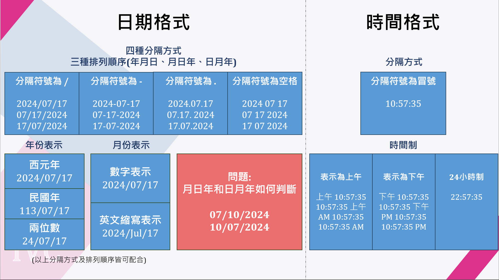
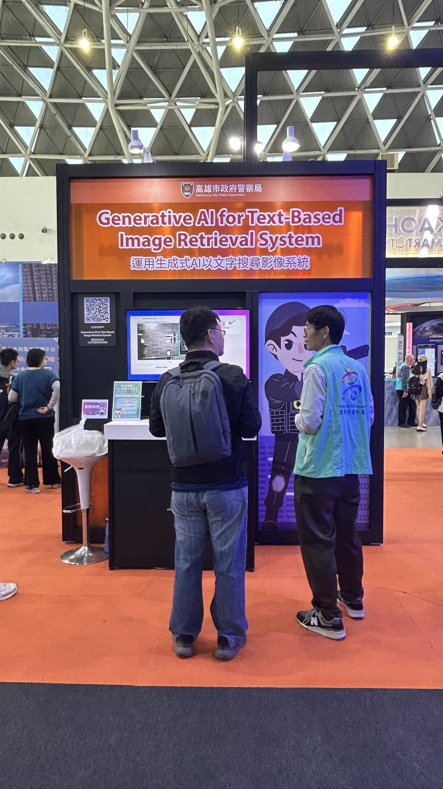

前言
會參加這個比賽是因為指導教授問我們想不想參加，因為毎年都會參加一些關於 AI 應用的競賽，我當時覺得這放履歷肯定讚，再加上教授寫計劃書的功力很強，而且獎金真的挺高的，因此我和其他同屆的同學就報名參加了 2024 年由數發部舉辦的 AI 應用鬥智賽。然後這篇我可能會以流水帳的方式寫，想說寫成日記的感覺這樣。
背景介紹
我先介紹一下這個比賽的形式好了，它是以配對的方式，一個出題方會對應到一個解題方，然後主辦單位已經有和一些出題方合作，所以有一些現成的題目可以挑，但是也可以由解題方自己找題目這樣 (其實有點不太公平我覺得)，我們挑的題目是由高雄刑事大隊 (以下簡稱刑大) 出的「運用生成式 AI 以文字搜尋影像」，他們的初衷是希望輸入一段影片，然後利用 LLM 詢問影片中出現的人物、商店、汽機車數量或特徵這樣，這樣聽起來是一個非常大的系統，它的確也是，我們是用了 4 個模型才組成符合他們需求的系統。
比賽階段
題目介紹
再來講一下他們到底實際想要什麼樣的系統，因為刑大在辦案的時候會收到一些由民眾提供的相關影片，但他們不知道影片中的地點在哪裡，所以他們以前的做法就是只能把影片看完，當然這非常消耗時間。所以刑大希望可以建立一個能夠縮短他們辦案效率的系統，他們的需求是輸入影片，就能夠透過 LLM 問答的方式詢問影片中是否出現某個物體，藉此找出影片中發生的地點，根據他們輸入的不同影片有不同的問題產生:
- 如果影片是對著馬路的監視器影片，輸入問題就會像是「紅色機車有幾台?」、「有沒有穿黃色衣服的人?」這樣子的問題，然後他們希望可以問的物體有商店、人物、汽機車、門牌、車牌這些物件。
- 如果是直接正對著嫌犯住處的影片，他們就會需要知道這個住處內有多少人，用於估算到時候攻破需要花費多少警力，所以針對這種影片就會詢問「某段時間內進出多少人?」這樣子的問題。
影片來源可能有監視器、行車紀錄器、民眾用手機拍攝的影片，所以畫質可能是很模糊的。
系統架構
我們的系統由於輸入型態是影片，所以必須一幀一幀地把影片切開來處理，然後因為前面有提到原始影片可能是模糊的，所以我們有使用Real-ESRGAN 去做調整畫質，之後就會根據使用者需求調整使用的模型，大概講一下我們用了哪些模型:
-
PaddleOcr : 用於門牌、車牌辨識，但這個都還是需要再微調才能適合台灣車牌門牌。
-
GroudingDINO : 這個模型是用於除了我們自己訓練的物件以外的所有物件判斷，因為他是一個 Open-Vocabulary Detection 的模型，所以基本上他應該都要能判斷，但我們有發現他沒辦法處理複合物件，像是「坐兩個人的銀色機車」，這句話對這個模型來說「兩個人」和「銀色機車」是兩個物件，所以他會畫出兩個 bbox 而不是一個。
-
PaddleDetection : 這是用來判斷人物進出的 ReID 模型，但其實這部分不只使用這個模型就搞定了，我們還需要電子圍籬的邏輯才能完成進出判斷。
-
YOLOv9 : 物件偵測的 King，我們是用來判斷商店招牌，然後其實只要能夠判斷超商、全聯那些商店就好，所以我們就從 google map 上瘋狂截圖超商的門牌來 label，然後使用的 label 工具是 Roboflow
上面這四種模型會統一輸出 csv 格式的 metadata，他是毎幀有出現什麼物體的一個表，然後再把這個資料餵給 LLM 這樣。我們用的是 GPT-3.5 搭配 Langchain 的 csv agent 回答問題這樣。
遇到的問題
-
範例影片很難提供: 因為這個任務輸入的影片都是和真正的刑案影片，所以機密性非常高，刑大需要往上簽陳，行政手續就必須花上不少時間，我們從 04/09 就開始問刑大能不能提供範例影片，結果到 05/30 才真正拿到。而由於在做這樣的系統一定要看到範例才能確定系統在往對的方向做，可能會有人想說開會不是都已經講的很清楚就是要這樣做了嗎? 怎麼還會有問題? 但如果兩方的專業領域差異很大的情況下，資訊差其實會很不對等，他們認為的常識對我們來說可能是從來沒有接觸過的，。
-
監視器日期格式不一: 由於監視器影片通常是由民間提供的，監視器廠商都不同，日期格式通常也都不太一樣，那我們當時就整理了一堆可能的日期格式，問刑大這樣我們要不要讓他們自己填寫每段影片的開始和結束日期時間。

獲獎階段
新聞稿: https://viewpoint.ikh.tw/index.php?pn=vw&id=n2y6hg9147ts
當下知道我們得獎後真的是快從椅子上跳起來，超級激動!!! 雖然只有銅獎而已，但獎金有 50 萬也算很不錯了，再來就是到台北參加頒獎典禮。
系統落地階段
這裡就真的是在回憶我們後續做了哪些事，主要是警方有一些需要我們配合的活動。
至刑大、資訊室安裝系統
當時我們就是到高雄鳳山的刑事大隊幫他們安裝系統，然後再去資訊室裝，然後因為刑大好像會自己寫 Docker，所以他們的電腦上有很多服務在跑，變成環境很亂裝不起來，有點尷尬，不過幸好刑大把環境整理乾淨後就裝成功了。
參與 2025 高雄智慧程市展
這段不需要我們幫忙，就是展覽會把刑大和 AI 相關的系統展示出來，然後會有人在攤位解說這樣。其實我們有去看這個攤位，想說看看自己的系統被展示出來是甚麼感覺，看到還是蠻感動的🥹

真正的心得感想
現在想起來那段時間真的超痛苦，因為比賽的時程是四個月，以這樣的系統規模來說，四個月算是不太夠用，而且我們是真的必須提供系統給出題方，得到他們的反饋後才能算在我們的成績，所以壓力又更大，每天被截止日期追著跑，然後因為要交付系統嘛，所以還要包在 docker 裡，連 docker 在當時都是順便學的，然後模型練出來之外還要寫介面，還要寫執行檔讓他們不會這麼難用。那時候整天都泡在實驗室，幾乎都是晚上 10 點才走得了，然後每天都在想什麼時候才能做完，尤其遇到需要 Demo 的時候每次都在實驗室通霄 :)，真是謝了，工作都沒這麼痛苦。
不夠最後有得到銅獎真的會覺得沒有白費我們這四個月這麼辛苦!